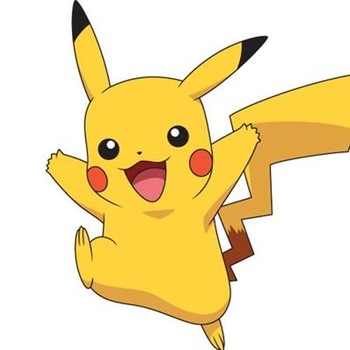

(3) Pokémon
Bulbasaur
 Bulbasaur es un Pokémon de tipo planta/veneno introducido en la primera generación. Es uno de los Pokémon
iniciales que pueden elegir los entrenadores que empiezan su aventura en la región Kanto, junto a Squirtle
y Charmander (excepto en Pokémon Amarillo). Destaca por ser el primer Pokémon de la Pokédex Nacional y
la en la Pokédex de Kanto..
Bulbasaur es un Pokémon de tipo planta/veneno introducido en la primera generación. Es uno de los Pokémon
iniciales que pueden elegir los entrenadores que empiezan su aventura en la región Kanto, junto a Squirtle
y Charmander (excepto en Pokémon Amarillo). Destaca por ser el primer Pokémon de la Pokédex Nacional y
la en la Pokédex de Kanto..
Enlace a página de consulta
Jolteon
Jolteon es un Pokémon de tipo eléctrico introducido en la primera generación. Es una de las
ocho evoluciones posibles de Eevee. Jolteon está inspirado en un zorro. Su pelaje le permite captar
y almacenar gran cantidad de electricidad estática del ambiente, con lo que se eriza y endurece formando
púas, que puede usar para concentrar y dirigir sus ataques eléctricos contra el rival. Sus pelos sólo se
convierten en pinchos, cuando se siente amenazado, asustado o furioso. Sus células generan un nivel bajo
de electricidad, que amplificada por la electricidad estática de su piel le permite lanzar rayos.
Su cuello es de color blanco, el resto del cuerpo es de un amarillo intenso, sus ojos son negros.
Enlace a página de consulta
Pikachu

Pikachu es un Pokémon de tipo eléctrico introducido en la primera generación. Es el Pokémon más conocido de
la historia, mayormente por ser el acompañante del protagonista del anime, Ash Ketchum y la mascota representante
de la franquicia Pokémon. Es el Pokémon inicial de Pokémon Amarillo y Pokémon: Let's Go Pikachu! A partir de la segunda
generación, es la forma evolucionada de Pichu.
Enlace a página de consulta